Префектура Ниигата · Токамати · искусство
Музей MonET в Токамати: с чего начать знакомство с искусством Этиго-Цумари
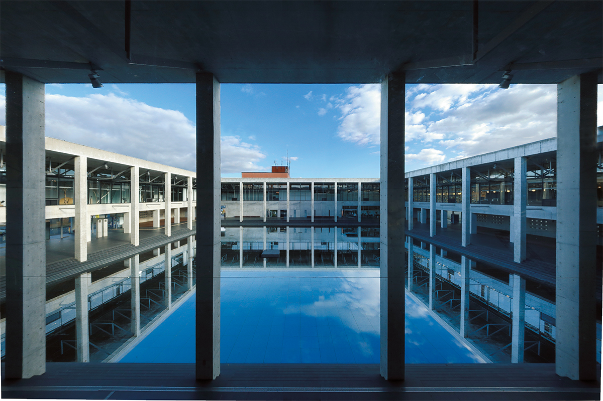
Этиго-Цумари на юге префектуры Ниигата славится обильными снегопадами, а с 2000 года ещё и фестивалем «Земля искусства». Путешествие по здешним деревням удобнее всего начинать в Токамати, в музее MonET, где работы современных художников открыты круглый год.
Край
Деревни, которые спасло искусство
Этиго-Цумари лежит на юге префектуры Ниигата, в одном из самых снежных районов мира. Молодёжь уезжала, деревни старели, и в 2000 году здесь впервые прошёл фестиваль «Земля искусства» Этиго-Цумари, один из крупнейших международных арт-фестивалей в мире. Его идея звучит так: человек является частью природы. Японские и зарубежные художники делают работы вместе с местными жителями, и о горных деревнях заговорили во всём мире.
Восьмой фестиваль шёл с 29 апреля по 13 ноября 2022 года. К 210 постоянным работам тогда добавились 123 новые, а сам фестиваль раскинулся на шесть районов общей площадью около 760 квадратных километров. Но многие работы остаются на месте и после фестиваля, и их можно увидеть в любой год.
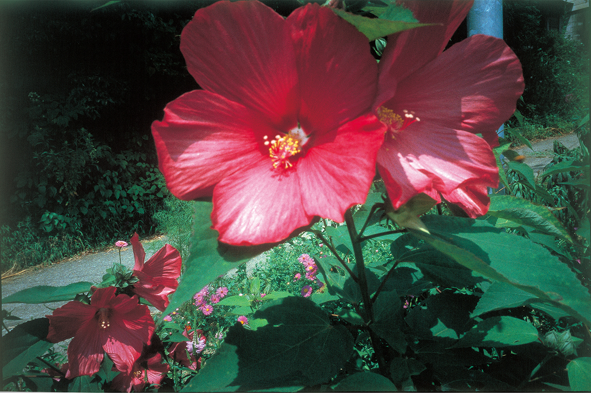
Район Токамати лежит к востоку от реки Синано. Он вырос на ткачестве и сельском хозяйстве. Кроме MonET здесь есть, например, музей книжки-картинки и плодов, в который художник превратил закрытую начальную школу.
Здание
Пруд, в котором отражается здание
В 2003 году в Токамати открылся центр «Кинарэ» по проекту архитектора Хироси Хара и его бюро «Atelier Φ». В 2021 году музей внутри центра перестроили и переименовали в Музей современного искусства сатоямы Этиго-Цумари MonET, а постоянную экспозицию обновили полностью. Сатоямой в Японии называют обжитую полосу между деревней и горами: рисовые поля, рощи, ручьи.
Центр здания занимает большой пруд, со всех сторон окружённый галереей. Это работа аргентинского художника Леандро Эрлиха «Palimpsest: пустой пруд». Вода повторяет здание и галерею, а если подняться на второй этаж и найти нужную точку, отражения складываются в несколько слоёв, и возникает странное, непривычное чувство.
Новый музей задуман как музей искусства, привязанного к месту. Работы здесь отвечают на окружающее пространство, на снег, реку и деревенскую жизнь, а время и свет меняют их на глазах у зрителя.
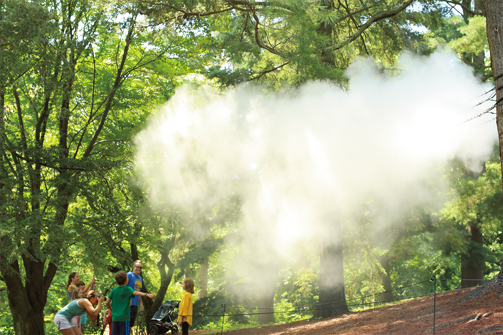
Вход
Стая из часов
На втором этаже, где выставлены работы под крышей, взгляд сразу цепляется за бесчисленные часы, развешанные в воздухе, как стая скворцов. Это «movements» команды современного искусства mé. Команда показывает работы в Этиго-Цумари почти на каждом фестивале с 2015 года.
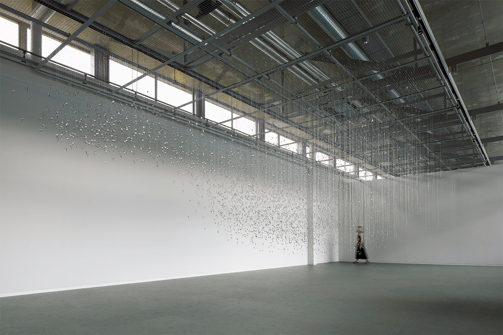
«Скворец внутри стаи не знает, что он часть стаи: стаю видно только со стороны. Искусство тоже существует как произведение лишь тогда, когда на него смотрят. Мне хотелось, чтобы эта работа стала переключателем, после которого гости фестиваля начнут смотреть на искусство сами»
Кэндзи Минамикава, директор команды mé
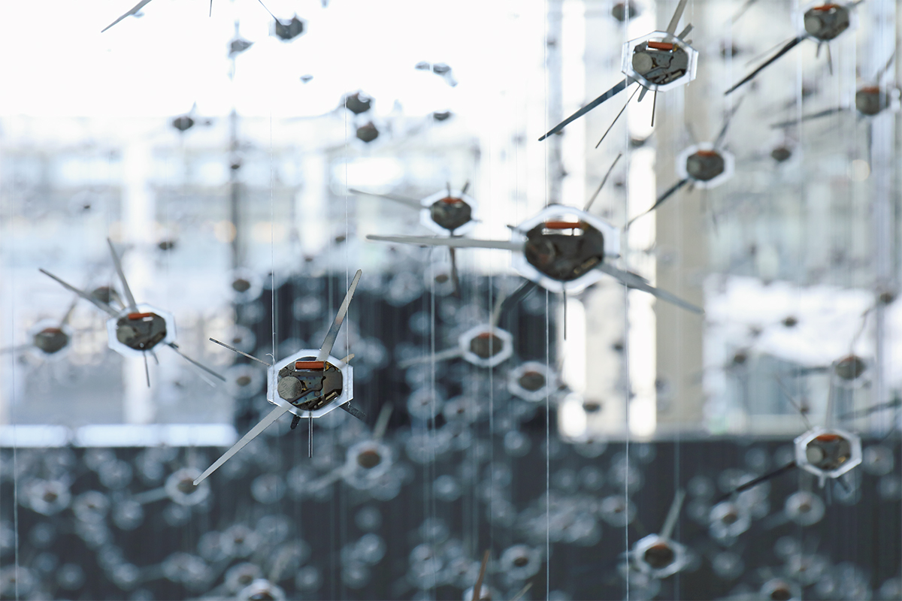
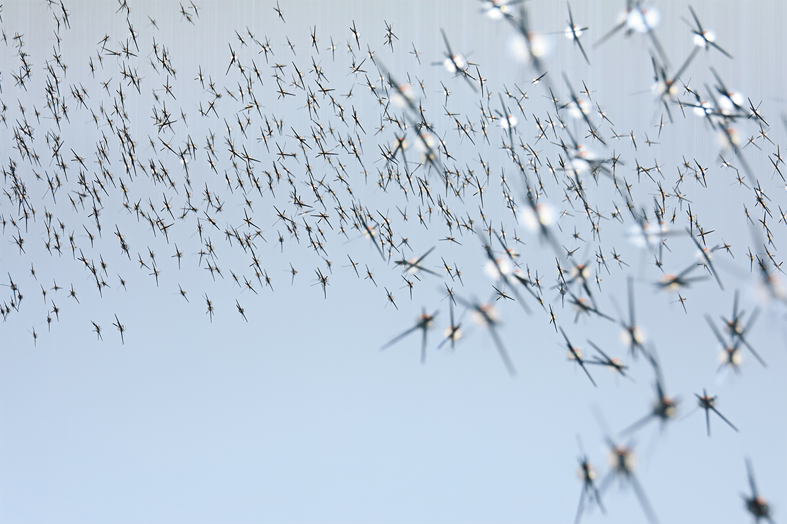
Художница команды Харука Кодзин объясняет, чем её привлекает фестиваль в деревне.
«Когда едешь в провинцию и смотришь, как за окном сменяются виды, освобождаешься от городской рациональности и смыслов, даже себя перестаёшь ощущать и сливаешься с природой. Тебя будто возвращают на землю, на которой ты когда-то стоял. В этом и интерес фестиваля, который проходит прямо в деревнях»
Харука Кодзин, художница команды mé
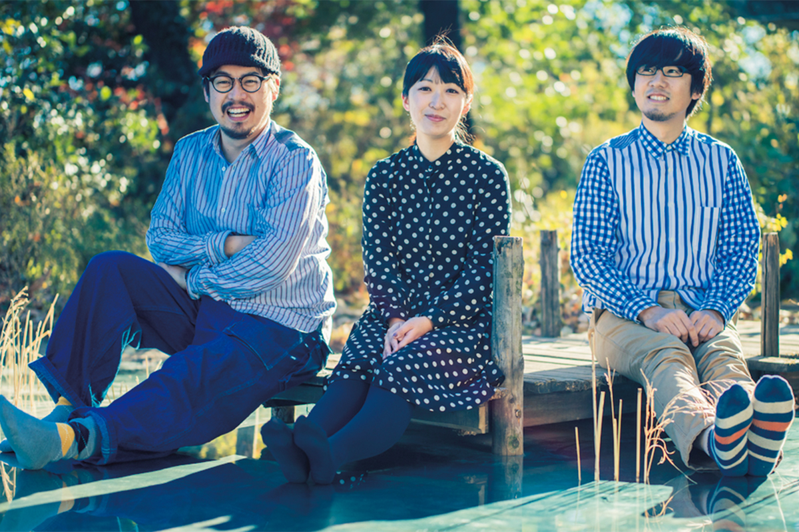
Зал
«Шестнадцать верёвок» и движущаяся скульптура
Дальше в глубине музея висят «16 верёвок» Ильи и Эмилии Кабаковых, художников, которых считают лицом фестиваля. Илья Кабаков (1933–2023) родился в СССР, иллюстрировал детские книги и неофициально занимался искусством, а с 1988 года работал вместе с Эмилией. В Этиго-Цумари у них есть и другие работы, например «Рисовые террасы» и «Арка жизни».
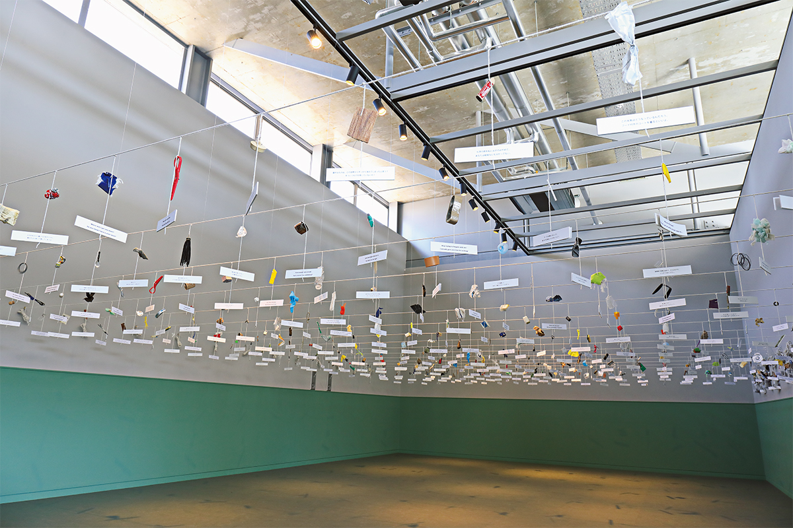
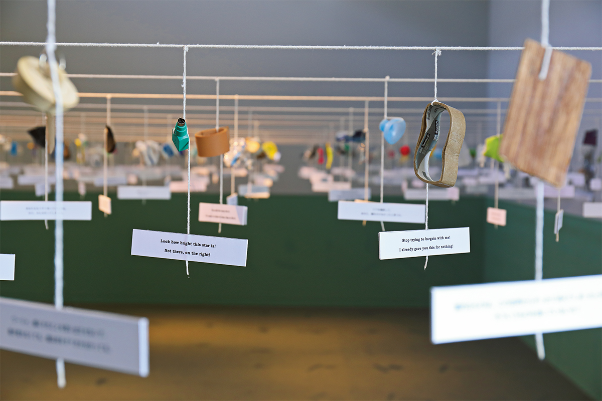
За ними начинается «Force» скульптора Кохэя Нава. Чёрное масло тонкими нитями без остановки бежит с потолка вниз, не поднимая ни ряби, и собирается на полу в пруд. На эту движущуюся скульптуру можно смотреть, забыв о времени.
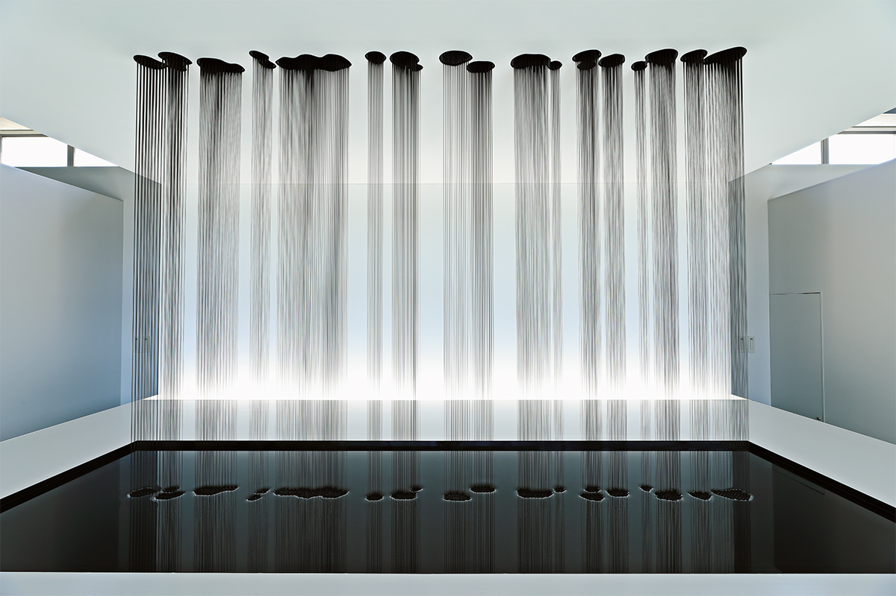
«Если закрепить за работой смысл, к ней приклеивается ярлык, и ничем другим её уже не увидеть. Это сужает её возможности, поэтому смотрите интуитивно. Мне хочется, чтобы работа была универсальной и толкование оставалось за зрителем»
Кохэй Нава, скульптор
Эту работу художник выбрал, увидев пространство MonET. О фестивале он говорит так.
«Искусство пришло в край, который пустел, и сюда поехали люди. Здесь чувствуешь историю места, его еду, природу, и такое устройство становится новой моделью, которой нет у музеев эпохи модерна. Вдали от города просыпаются непривычные мысли, и искусство раздвигает взгляд. Это есть только у „Земли искусства“»
Кохэй Нава, скульптор
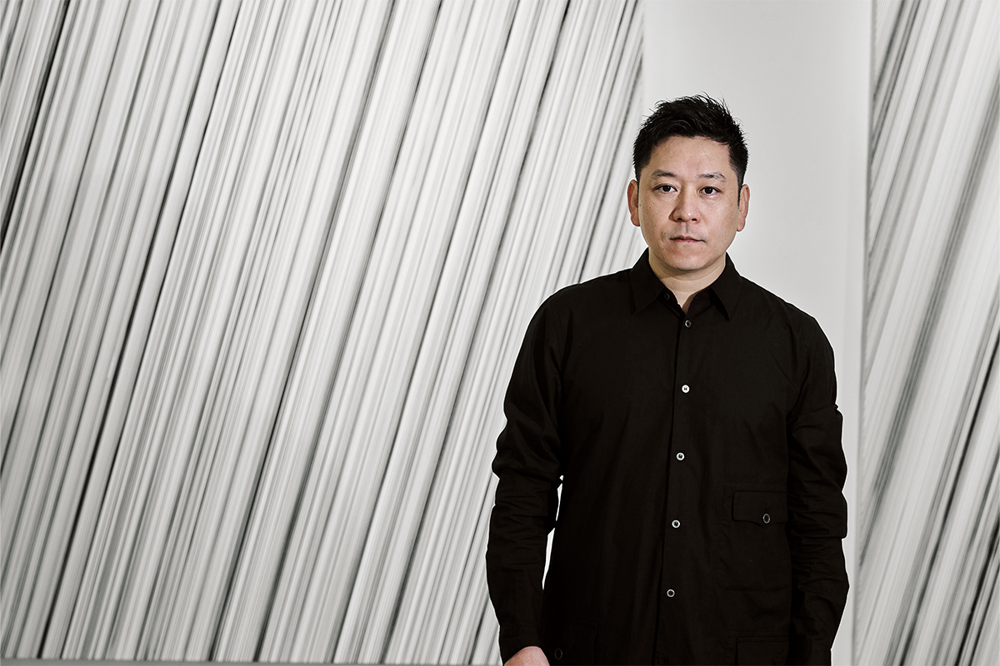
Земля
Работы о снеге, реке и почве
Обходя MonET, знакомишься и с самим краем. Здесь много работ, которые выросли из здешней природы и быта.
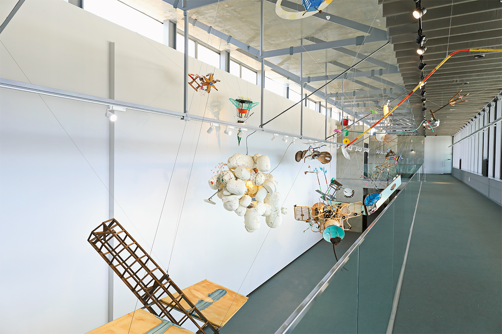
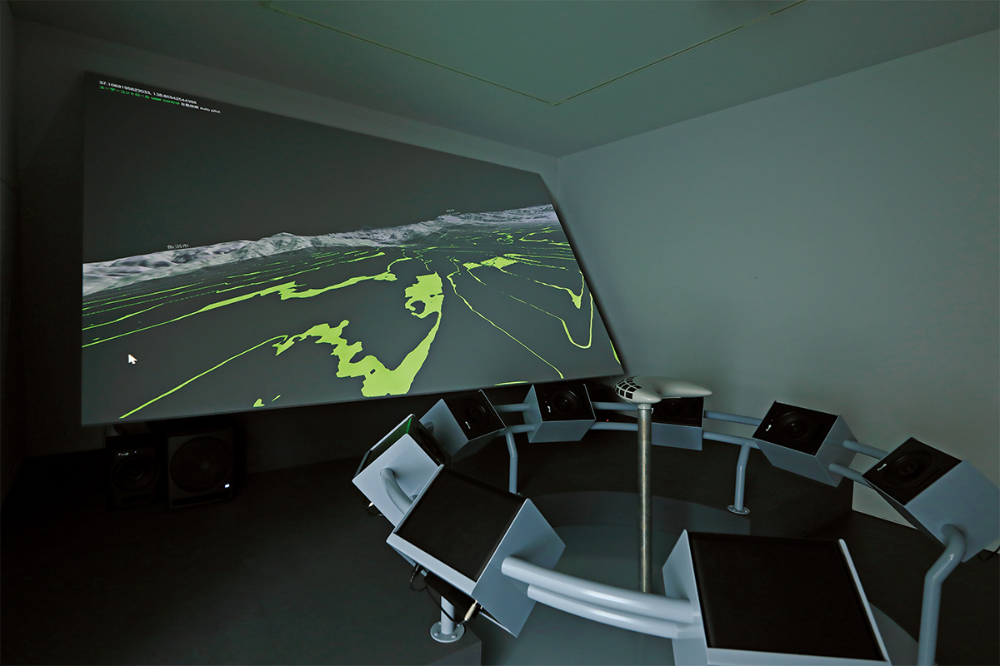
Койти Курита много лет собирает почву: его занимает красота самых разных земель Японии. Для «Библиотеки почв» он объехал все города, посёлки и деревни префектуры Ниигата в границах до больших слияний муниципалитетов начала 2000-х и разложил собранную землю по цветам.
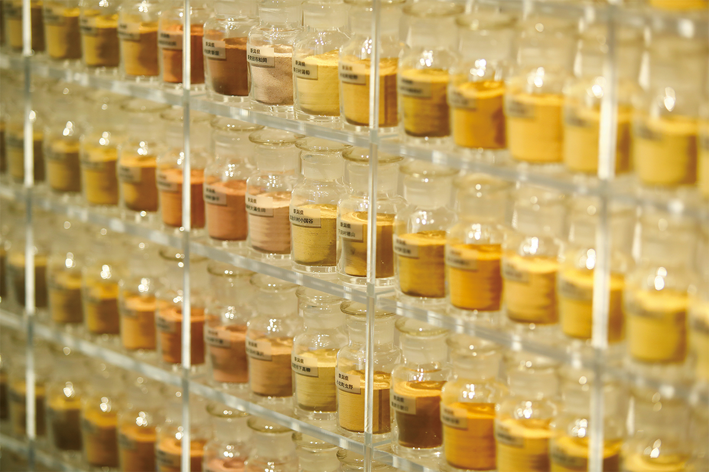
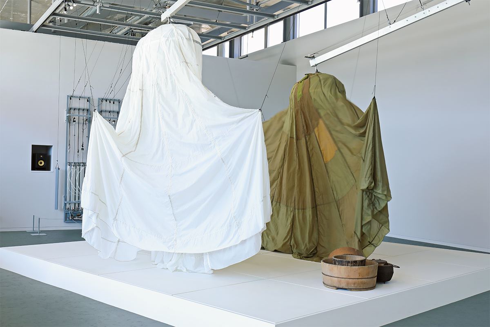
Река Синано и вода вдохновили Карстена Николая на «Wellenwanne LFO»: рябь на воде он показывает отражениями в зеркальной поверхности.
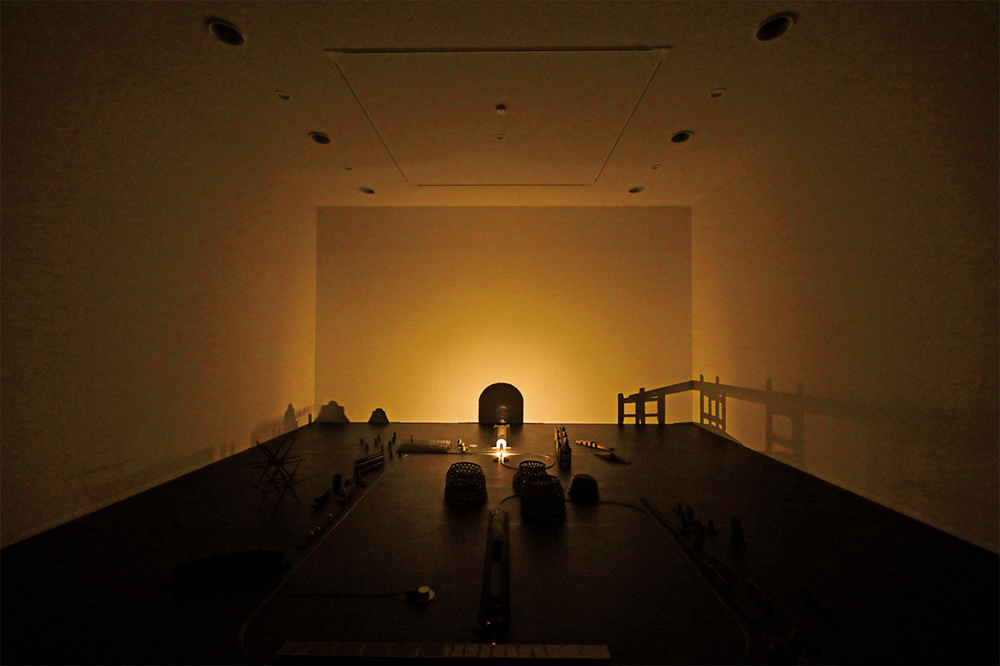
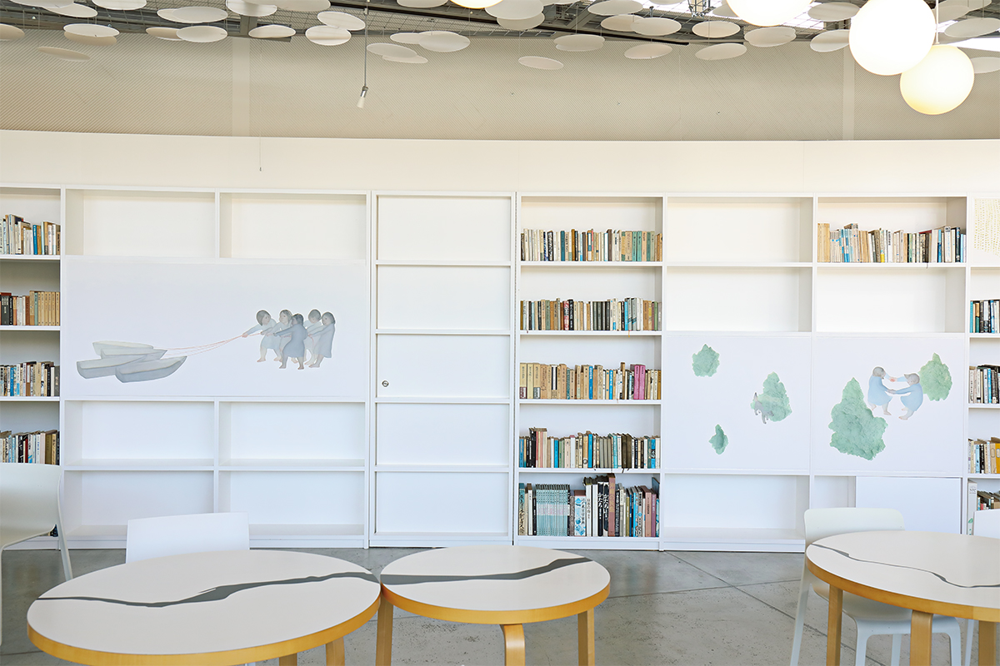
Музей современного искусства сатоямы Этиго-Цумари MonET
- Адрес
- префектура Ниигата, Токамати, Хонтё, 6-1
- Телефон
- +81 25-761-7766
- Часы работы
- 10:00–17:00 (во время фестиваля 2022 года, до 13 ноября, до 18:00)
- Выходные
- вторник и среда (кроме праздников); открыт круглый год
- Цены / Вход
- постоянная экспозиция 1000 иен; специальная выставка 1200 иен (с постоянной экспозицией) или по паспорту фестиваля (2022 год)
Фото: Норихито Судзуки, Кэйдзо Киоку, Такахиро Цусима.